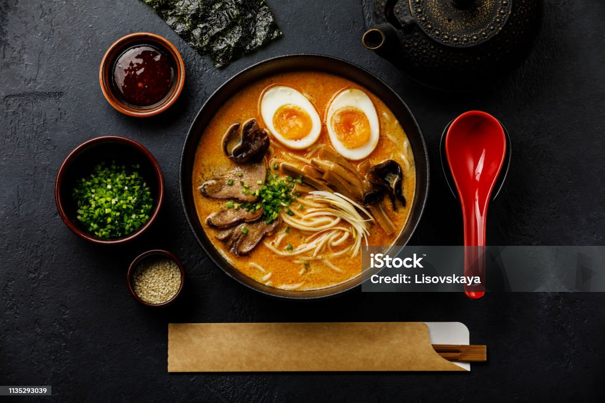

Ramen Recipe
Homepage

Description
Here’s a perfect recipe for a Pork Tonkatsu Ramen—a comforting and hearty Japanese dish with a crispy pork cutlet, savory broth, and tender noodles. The rich tonkotsu broth and the crispy pork create a satisfying and indulgent bowl of ramen.
Pork Tonkatsu Ramen Recipe
Ingredients:
- 4 cups pork broth (homemade or store-bought tonkotsu broth)
- 2 packs ramen noodles (fresh or dried)
- 2 boneless pork chops (about 1-inch thick)
- 1 cup panko breadcrumbs
- 1 egg (beaten)
- 1/2 cup flour (for dredging)
- Salt and pepper (for seasoning)
- 2 boiled eggs (soft-boiled, for garnish)
- 2 green onions (chopped, for garnish)
- 1 tbsp soy sauce
- 1 tbsp sesame oil
- 1 tbsp rice vinegar
- 1 tsp chili oil (optional, for heat)
- 1/2 cup bamboo shoots (optional)
- 1/2 cup corn (optional)
- 1 tbsp miso paste (optional, for deeper flavor)
Cooking Instructions
- Prepare the pork cutlets: Season the pork chops with salt and pepper. Dredge them in flour, dip into the beaten egg, then coat with panko breadcrumbs. Set aside.
- Fry the pork cutlets: Heat a pan with oil over medium-high heat. Fry the pork cutlets for 3-4 minutes per side until golden brown and crispy. Remove from the pan and set aside to rest.
- Prepare the broth: In a large pot, heat the pork broth over medium heat. Add soy sauce, sesame oil, rice vinegar, and miso paste (if using). Let the broth simmer for about 10 minutes to combine the flavors.
- Cook the ramen noodles: While the broth is simmering, cook the ramen noodles according to package instructions. Drain and set aside.
- Slice the pork: Once the pork cutlets are rested, slice them thinly into strips.
- Assemble the ramen: Divide the cooked noodles into bowls. Pour the hot tonkotsu broth over the noodles. Arrange the sliced pork, soft-boiled eggs, chopped green onions, bamboo shoots, and corn (if using) on top.
- Serve: Drizzle with chili oil (optional) and serve immediately. Enjoy your hearty and satisfying Pork Tonkatsu Ramen!
Enjoy your indulgent Pork Tonkatsu Ramen!